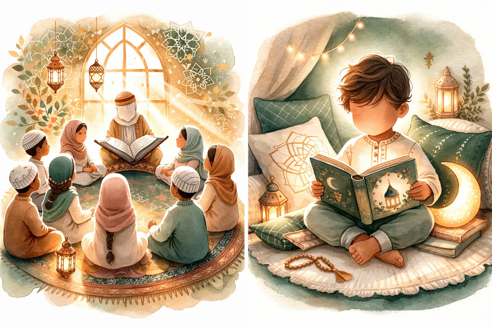
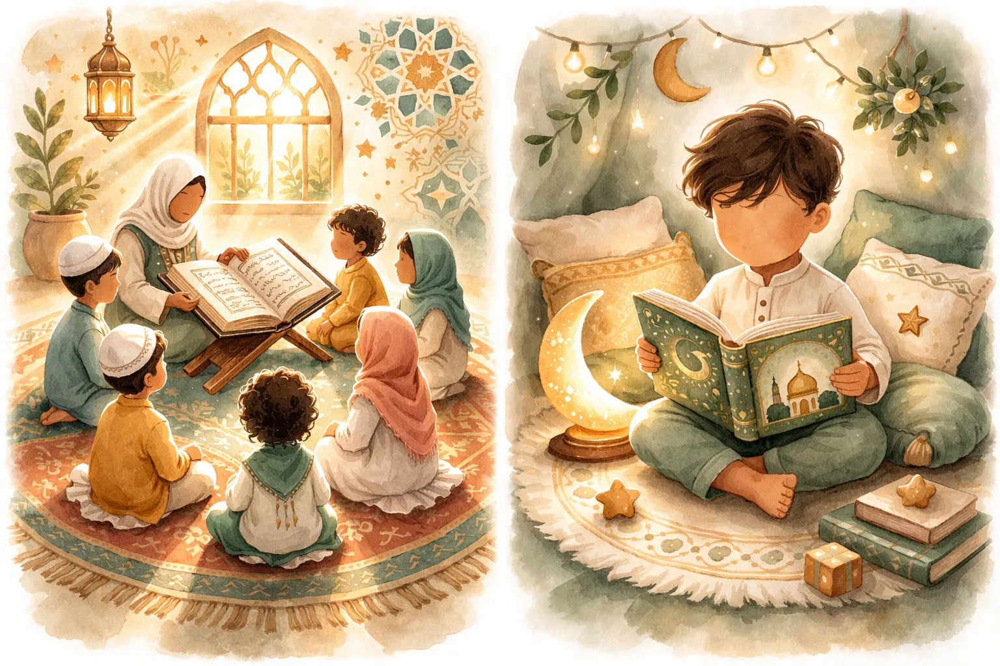

Quran Stories for Kids: A Complete Guide to Age-Appropriate Retellings
The Quran is full of stories that captivate, teach, and inspire. But how do you share them with a two-year-old? A seven-year-old? A preteen? This guide breaks it all down — which Quran stories for kids work at each age, how to retell them so they actually stick, and how to turn story time into the highlight of your child's day.

📖 Want beautifully illustrated Quran stories ready to read tonight?
Start Their Qur'an Journey →Here's something most Muslim parents discover the hard way: the Quran is not a kids' book. It wasn't written for five-year-olds, and that's okay. It's the word of Allah — timeless, profound, and layered with meaning that scholars spend lifetimes unpacking. But hidden inside its 114 surahs are some of the most gripping, beautiful, and powerful stories ever told. And your kids deserve to hear them.
The trick isn't dumbing them down. It's meeting your child where they are. Their age. Their attention span. Then retelling these Quran stories for kids in a way that lights up their imagination while staying true to the source. That's what this guide is for.
Why the Quran Tells Stories in the First Place
Before we get into the how, let's talk about the why. Allah didn't need to put stories in the Quran. He could have given us rules and left it at that. But He chose to teach through story — through real people facing real challenges, making real choices, and experiencing real consequences. There's a reason for that.
Stories bypass the part of the brain that resists being told what to do. When you say "Be patient," a kid nods and forgets. When you tell them how Prophet Ayyub lost everything and still turned to Allah — "Indeed, adversity has touched me, and You are the Most Merciful of the merciful" (Quran 21:83) — patience becomes something they can see and feel.
Allah Himself says: "We relate to you the best of stories" (Quran 12:3). If the Creator of the universe calls these the best stories, we should probably be sharing them with our kids. (For a roundup of the most beloved ones, check our guide to Islamic stories for kids.)
Quran Stories for Toddlers (Ages 18 Months – 3 Years)
Let's start with the youngest. Quran stories for toddlers aren't really about the story. They're about the experience — the sound of your voice, the warmth of your lap, the rhythm of the words. At this age, you're planting seeds, not expecting fruit.
🐘 The Elephant Army (Surah Al-Fil)
This is the perfect starter Quran story for toddlers. It has elephants. That's basically all you need to know about why it works for this age group.
How to tell it: "A long time ago, a man brought big, BIG elephants to break Allah's special house. But guess what? Allah sent tiny, tiny birds! And those little birds stopped the big elephants. Because Allah is the strongest."
🧸 Toddler Tips
Use animal toys as props. Make elephant stomping sounds. Flap your arms like birds. The story takes 60 seconds. That's all you need.
🐋 Prophet Yunus and the Big Fish
Toddlers are obsessed with animals, and a man being swallowed by a giant fish? That's basically their dream story.
How to tell it: "Yunus was inside a BIG fish! It was dark and scary. But he talked to Allah — he said 'Ya Allah, help me!' And Allah heard him and told the fish to let him go. Whoooosh! Out he came, safe and sound."
🧸 Toddler Tips
Use a blanket to create the "inside the fish" feeling. Crawl under it together, make it dark, then burst out. They'll want to do this twenty times. Let them.
🐜 Prophet Sulaiman and the Tiny Ant
A king who could talk to ants. For a toddler, this is peak entertainment.
How to tell it: "Prophet Sulaiman was a big, important king. But he was also very kind. One day, a tiny ant said 'Everyone go home! The king is coming!' And Sulaiman heard the ant — because Allah gave him a special gift — and he smiled and was very gentle. He didn't step on any ants."
🧸 Toddler Tips
Next time you see ants outside, retell this story on the spot. Real-world connections at this age are incredibly powerful.
Quran Stories for Children Ages 4–6
Now we're getting somewhere. At this age, kids can follow a beginning-middle-end structure. They understand basic emotions (scared, happy, sad, brave) and can grasp simple cause-and-effect. You can stretch Quran stories for kids to 5-10 minutes and include more detail.
🌊 Prophet Nuh and the Great Flood
At four, kids can handle more of this story than you'd think. They love the logistics — building a boat, gathering animals, the rain coming down.
How to tell it: Start with Nuh asking people to believe in Allah — and everyone laughing at him. Stress how long he tried (950 years — let them try to count that high). Then Allah told him to build a huge boat. "What animals do you think got on the boat?" Let them name as many as they can. Then the rain. Then safety.
💚 The Lesson They'll Get
Even when people laugh at you, if you're doing the right thing, keep going. Allah will always take care of you.
🔥 Prophet Ibrahim and the Fire
Young Ibrahim looked at the stars, the moon, the sun, and realized none of them could be God because they all disappear. Only Allah is constant. Then he smashed the idols and when people threw him in a fire, Allah made it cool and peaceful.
How to tell it: "Ibrahim was very, very smart. He looked up at the sky and thought about who made all of this. He figured out that only Allah is real. But the people around him worshipped statues. Ibrahim said, 'These statues can't do anything!' And he broke them. The people were so angry, they built a huge fire and threw Ibrahim in. But guess what Allah did? He told the fire: 'Be cool and safe for Ibrahim.' And Ibrahim sat in the fire and it felt like a garden!"
💚 The Lesson They'll Get
Think for yourself. Be brave enough to stand up for what's right. Allah protects those who trust Him. (This also connects beautifully to Eid al-Adha celebrations.)
👶 Baby Isa Speaks from the Cradle
A baby that can talk? Kids at this age will absolutely lose their minds over this one.
How to tell it: "Maryam was all alone and very scared. People were going to say mean things about her. But Allah told her to shake a palm tree and eat the fresh dates. Then when people came and said, 'How could this happen?' baby Isa — who had just been born — actually spoke! A tiny baby, talking! He said, 'I am a servant of Allah. He gave me the Book and made me a prophet.' Everyone was amazed."
💚 The Lesson They'll Get
Allah defends those who are good, even in impossible situations. Maryam trusted Allah and He took care of everything.

Quran Stories for Kids Ages 7–10
This is the golden age for Quran stories for kids. They can handle multi-episode storys, complex emotions like jealousy and forgiveness, and they're starting to ask "why?" about everything. Feed that curiosity.
🌟 The Full Story of Prophet Yusuf
This is the Quran's only story told in complete, continuous story (Surah Yusuf, Chapter 12). It has everything: jealousy, betrayal, false accusations, prison, dreams, power, and the most beautiful forgiveness scene in all of scripture.
How to tell it: Break it into episodes across multiple nights. Night 1: the dream and the well. Night 2: Egypt, the palace, and prison. Night 3: the king's dream and Yusuf's rise to power. Night 4: the brothers return and the forgiveness. End each night on a cliffhanger.
💚 The Lesson They'll Get
Life will be unfair sometimes. People you love might hurt you. But if you stay patient, honest, and close to Allah, He will elevate you beyond anything you imagined. And forgiveness sets you free.
🏔️ The People of the Cave (Ashab al-Kahf)
A group of young men — teenagers, basically — who refuse to worship false gods when their entire society does. They escape to a cave, fall asleep, and wake up 309 years later. The world has completely changed. Now everyone believes in Allah.
How to tell it: Stress that these were young people, not old scholars. They were brave enough to say "No, this is wrong" when everyone around them said the opposite. Ask your child: "Have you ever been the only one who thought differently? That's what it felt like for them."
💚 The Lesson They'll Get
You don't have to follow the crowd. Standing up for your beliefs matters, even when — especially when — you're young. Allah honors courage.
🌊 Prophet Musa and the Parting of the Sea
The most exciting story in the Quran. Pharaoh's cruelty. Baby Musa floating in a basket. Growing up in the palace of his enemy. The burning bush. The staff turning into a serpent. And then — the sea splitting in half as an entire nation walks through on dry ground.
How to tell it: This story is huge, so spread it across a week. Each night is an episode. Kids at this age can handle the tension of Pharaoh's cruelty and the triumph of Musa's trust in Allah. The sea-splitting scene should be told with maximum drama.
💚 The Lesson They'll Get
No tyrant is bigger than Allah. When you feel trapped and hopeless, Allah can make a way where there seems to be no way. Just keep walking forward.
Quran Stories for Preteens and Teens (Ages 11+)
By now, your child can engage with the actual Quran text — not just retellings. Start reading the Arabic (or translation) together and discussing it. These are the stories that will shape how they see the world during the most important years of their life.
Stories That Hit Different at This Age
- Prophet Ayyub's patience through suffering — When they're dealing with social pressure, body image issues, or feeling like life is unfair, Ayyub's story shows that hardship isn't punishment. It's a test. And Allah's relief always comes.
- Luqman's advice to his son (Surah 31) — Literal parenting advice in the Quran. "Don't associate anything with Allah. Be grateful to your parents. Don't be arrogant. Walk humbly and lower your voice." Read this together and discuss each piece of advice.
- Prophet Muhammad's ﷺ journey from orphan to prophet — A child who lost both parents, was raised by his grandfather and uncle, never learned to read or write, and became the most influential human being in history. For teenagers feeling lost or uncertain about their future, this story is everything.
- Dhul-Qarnayn's just leadership (Surah 18) — A ruler who had ultimate power and used it to help people, not exploit them. Perfect for discussions about justice, leadership, and using whatever power you have for good.
How to Make Quran Stories Come Alive
Knowing which stories to tell is half the battle. The other half is the telling. Here's what works:
1. Tell, Don't Read (At Least Sometimes)
Books are wonderful. But nothing beats a parent looking into their child's eyes and telling the story from memory. You don't need to be perfect. You need to be present. The stumbles and pauses are part of the magic — they show your child that you care enough to try.
2. Use the Cliffhanger Method
Stop at the most exciting part. "And just when Ibrahim was about to... well, I'll tell you tomorrow night." Watch them beg for more. This turns Quran story time into the most anticipated part of their day. It's the same technique that makes TV shows addictive — except you're building faith instead of screen dependency.
3. Ask Questions, Don't Lecture
"Why do you think the brothers were jealous of Yusuf?" is ten times more powerful than "The brothers were jealous because..." Let them think. Let them wrestle with the story. Their answers will often surprise you — and sometimes teach you something too.
4. Connect to Real Life
After the story, bring it home. "Have you ever felt like everyone was against you, like Nuh? What did you do?" or "If you were Maryam, would you have been scared?" When Quran stories connect to their actual feelings and experiences, they stop being ancient history and become personal guidance.
5. Create Story Rituals
The routine matters as much as the content. Maybe it's every night after Isha. Maybe it's Saturday morning pancakes and prophets. Maybe it's a special blanket or a cup of warm milk. Whatever it is, the ritual signals to your child's brain: "Something special is about to happen." (If you're building a bedtime routine, we have 7 perfect bedtime Quran stories ready to go.)
Common Mistakes Parents Make with Quran Stories
A few things to avoid:
❌ Making It a Lecture
If your child feels like Quran story time is really "Quran lesson time," they'll tune out. The story should be the star, not the moral. The moral sinks in naturally when the story is well-told. You don't need to spell it out every time.
❌ Using Fear as the Main Tool
Yes, the Quran has stories about punishment. But if every story you tell ends with "and if you're bad, Allah will punish you," you're building fear, not faith. Focus on Allah's mercy, protection, love, and wisdom. The fear of Allah develops naturally from understanding His greatness — not from being scared into submission.
❌ Going Too Complex Too Early
A three-year-old doesn't need to know about the theological debates between Musa and Pharaoh. Meet them where they are. "Musa was brave and Allah helped him" is enough at that age. There will be time for depth later.
Building a Quran Story Library
You don't need a huge collection to start. Here's what I'd recommend building over time:
- Board books for toddlers: Simple Quran stories with thick pages and bright pictures. Focus on Nuh's ark, Yunus and the whale, the elephant army.
- With pictures storybooks for 4-8: Look for publishers like Goodword Books, Kube Publishing, and Learning Roots. Beautiful artwork makes a huge difference at this age.
- Chapter books for 8-12: More detailed retellings that include Quranic references. Kids at this age can start seeing how the stories connect to the actual text.
- The Quran itself for 11+: Get a good English translation (or your native language) with commentary. Read the actual surahs together and discuss. (For book recommendations across all ages, see our complete guide to Islamic books for kids.)
- Audio and apps: For car rides, quiet time, or as supplements. Our own Islamic Stories for Kids app has beautifully narrated Quran stories designed for different age groups.
A Story-a-Week Plan to Get You Started
If you're feeling overwhelmed, here's a simple four-week plan. One major story per week, told across multiple nights:
- Week 1: Prophet Nuh and the Ark — focus on patience and trust
- Week 2: Prophet Ibrahim's journey — focus on bravery and thinking for yourself
- Week 3: Prophet Yusuf — focus on patience, forgiveness, and Allah's plan
- Week 4: Prophet Musa and Pharaoh — focus on justice and trusting Allah in impossible situations
After four weeks, you'll have covered the Quran's four biggest story arcs, and your child will be hooked. Then explore the 10 most inspiring prophet stories for kids to keep the momentum going.
The Gift That Keeps Giving
Here's what nobody tells you about sharing Quran stories for kids: it changes you too. As you retell these stories, you'll notice things you missed before. You'll connect with the prophets on a deeper level. You'll find yourself tearing up at parts you've heard a hundred times because now you're telling them to your child, and suddenly they're new again.
Your kids won't remember every detail of every story. But they'll remember this: that their parent sat with them, night after night, and shared something sacred. They'll remember the feeling of being close to you and close to Allah at the same time. They'll remember that the Quran wasn't something boring or scary — it was the source of the best stories they ever heard.
And when they're grown, with kids of their own, they'll sit on the edge of a small bed and say, "Let me tell you about a man named Nuh, who built a boat when everyone laughed at him..."
That's how faith travels through generations. Not through lectures. Through stories. Through love. Through you. 💚